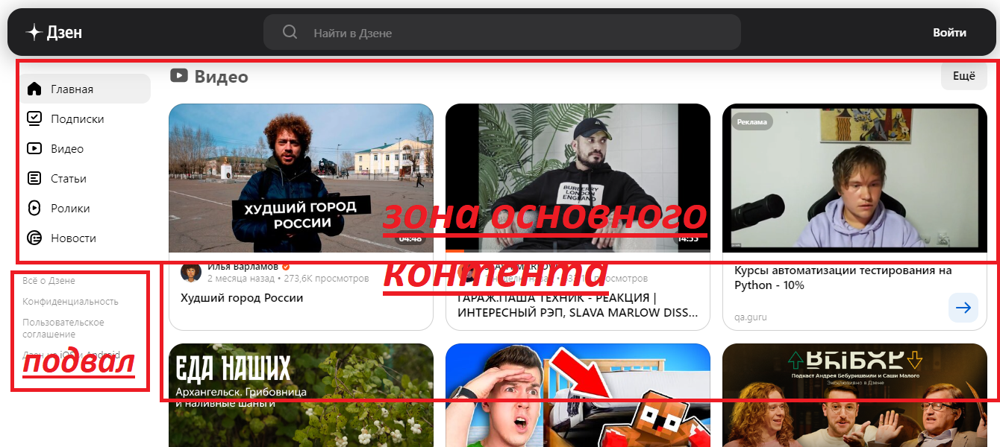
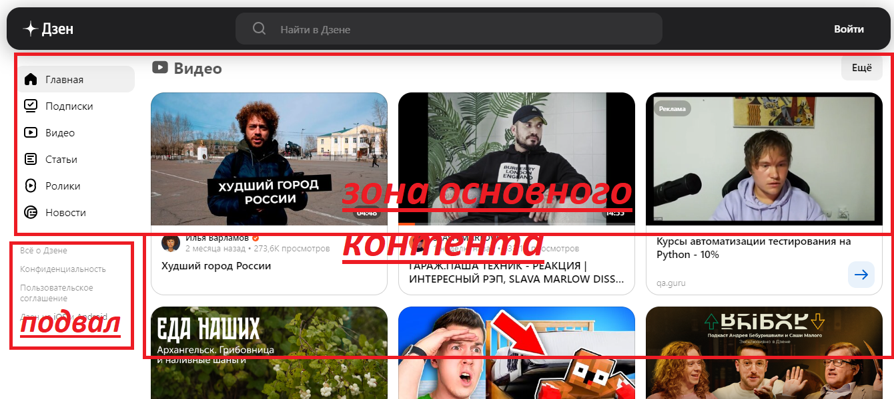
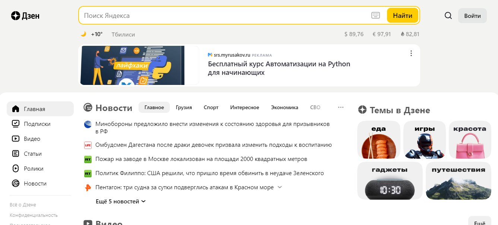
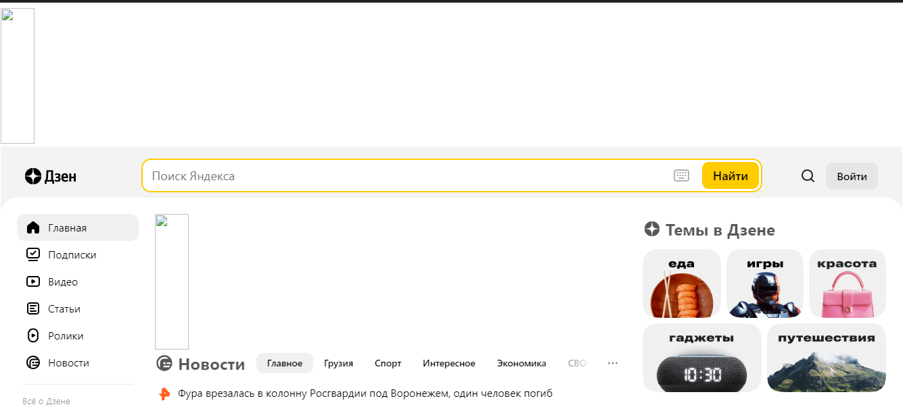
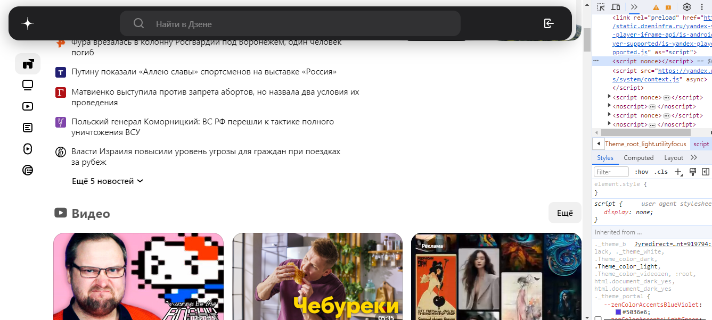

Знакомство с веб-технологиями (семинары)
Урок 1. Веб-технологии: вчера, сегодня, завтра
Задача: на основе сайта Яндекс
- Определите, на каком протоколе работает сайт.
- Проанализируйте структуру страницы сайта.
- Внесите не менее 10 изменений на страницу с помощью инструмента разработчика и представьте скриншоты было/стало.
Решение:
- Данный сайт работает на защищенном,зашифрованном протаколе HTTPS,что означает,что личные данные с данного сайта защищены, что можно видеть по URL сайта
- При анализировании структуры сайта можно выделить:
- шапку
- зону основного контента
- зону виджетов
- подвал
Это можно видеть на картинках ниже:
 

- Для наглядного локального изменения страницы посмотрим на сайт до изменений :
 
И после:
 
Что произошло?
- был убран рекламный банер и строка с погодой
- изменены разметка страницы,шрифты и отсупы
- выборочно удалены некоторые строки кода в бэкэнде